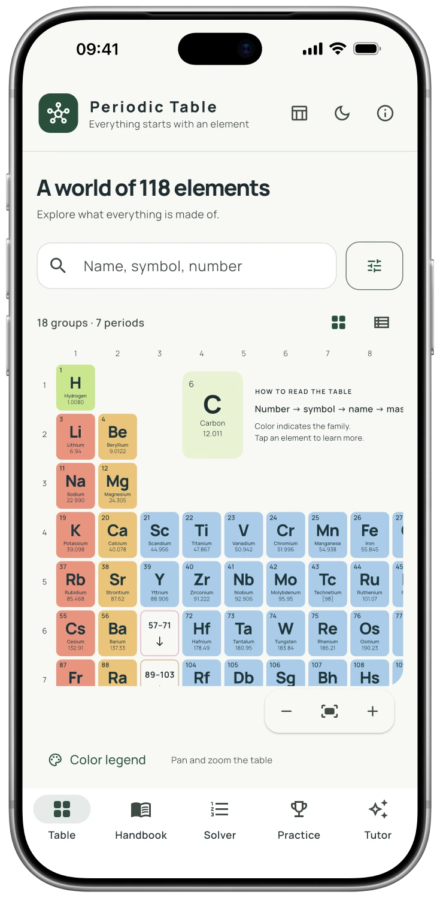
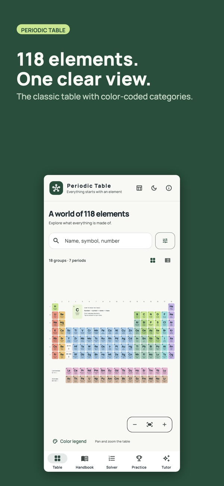
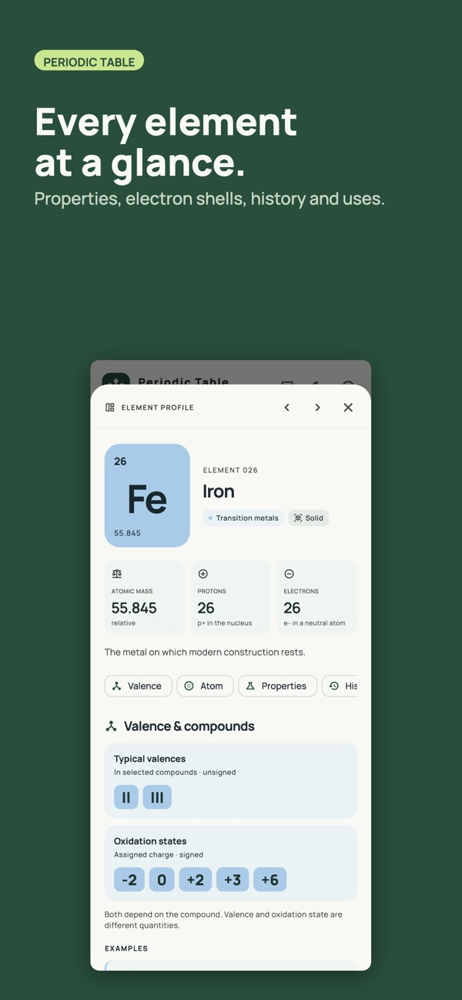
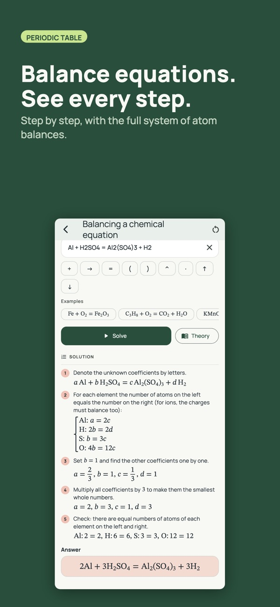

మూలకాలను తెలుసుకోండి
లక్షణాలు, ఎలక్ట్రాన్ పొరలు, చరిత్ర మరియు ఉపయోగాలు తెలుసుకోండి. పేరు, చిహ్నం లేదా పరమాణు సంఖ్య ద్వారా శోధించండి.
గొప్ప ఆవిష్కరణలు చిన్న అంశాలతో ప్రారంభమవుతాయి
రసాయన శాస్త్రం యొక్క మొత్తం ప్రపంచం.
మొత్తం 118 మూలకాలను తెలుసుకోండి. వాటి లక్షణాలను అన్వేషించి, చర్యలను అర్థం చేసుకుని, సూత్రం నుంచి సమాధానం వరకు లెక్కలను అనుసరించండి.
ఉచిత డౌన్లోడ్ · ఐచ్ఛిక ప్రో ఫీచర్లు


యాప్ స్క్రీన్షాట్
సదుపాయాలు
లక్షణాలు, ఎలక్ట్రాన్ పొరలు, చరిత్ర మరియు ఉపయోగాలు తెలుసుకోండి. పేరు, చిహ్నం లేదా పరమాణు సంఖ్య ద్వారా శోధించండి.
సమీకరణాలను సమతుల్యం చేయండి, మోలార్ ద్రవ్యరాశిని లెక్కించండి మరియు పరిష్కారాలు మరియు pHతో సమస్యలను పరిష్కరించండి.
రసాయనశాస్త్ర హ్యాండ్బుక్ను చదవండి మరియు 15 అంశాలలో సాధన చేయండి. ప్రో వెర్షన్లో యానిమేటెడ్ అణువులతో కూడిన వర్చువల్ ల్యాబ్ మరియు ఆన్-డివైస్ AI ట్యూటర్ ఉంటాయి.
యాప్ను చూడండి
నిజమైన స్క్రీన్లు. లోపల ఏముందో తెలుసుకోవడానికి ఇది మీకు సహాయపడుతుంది.



FAQ
మీరు ప్రారంభించే ముందు సమాధానాలు
అవును. హ్యాండ్బుక్ మరియు దానిలోని సమాచారం ఇన్స్టాల్ చేసిన తర్వాత ఆఫ్లైన్లో అందుబాటులో ఉంటాయి. Apple Intelligence ఫీచర్లకు అనుకూలమైన పరికరం మరియు డౌన్లోడ్ చేసిన సిస్టమ్ మోడల్ అవసరం.
మీరు యాప్ను ఉచితంగా డౌన్లోడ్ చేసుకోవచ్చు. ప్రో లేకుండా కూడా హ్యాండ్బుక్ ఉపయోగకరంగా ఉంటుంది; అదనపు అభ్యాస సాధనాలు మరియు AI ఫీచర్లు యాప్ యొక్క ప్రో ప్లాన్పై ఆధారపడి ఉంటాయి. యాప్ స్టోర్ మరియు యాప్లోని కొనుగోలు స్క్రీన్ ప్రస్తుత ఎంపికలను చూపుతాయి.
లేదు. మీరు దాని లేకుండా హ్యాండ్బుక్ను చదవవచ్చు మరియు ఉపయోగించవచ్చు. AI ట్యూటర్ ఐచ్ఛికం మరియు Apple Intelligence ప్రారంభించబడిన అనుకూలమైన iPhone లేదా iPad అవసరం; మద్దతు ఉన్న భాషలు మీ సిస్టమ్పై ఆధారపడి ఉంటాయి.
ఈ యాప్ iPhone మరియు iPad కోసం అందుబాటులో ఉంది. ప్రస్తుత ఆపరేటింగ్ సిస్టమ్ మరియు పరికర అవసరాల కోసం యాప్ స్టోర్ పేజీని చూడండి.
ఉచిత డౌన్లోడ్ · ఐచ్ఛిక ప్రో ఫీచర్లు

AI ట్యూటర్ అనేది Pro సదుపాయం. దీనికి అనుకూలమైన iPhone లేదా iPad, iOS/iPadOS 26 లేదా తదుపరి వెర్షన్ మరియు ప్రారంభించిన Apple Intelligence అవసరం. అందుబాటు భాష మరియు ప్రాంతాన్ని బట్టి మారుతుంది. AI సమాధానాల్లో తప్పులు ఉండవచ్చు.